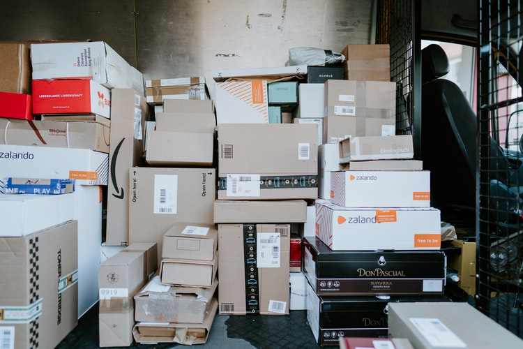

compatible
If you want to send a package or multiple packages quickly and efficiently throughout the UK then courier services are a very sensible option. Couriers offer an ideal service for large or heavy items that are too big for standard Royal Mail delivery, but not big enough for large logistical firms; courier companies will generally provide a range of services throughout the UK according to the customers requirements, including next day and even same day deliveries.
As with most delivery networks there are both advantages and disadvantages and understanding the benefits and limits of the network will help you choose the right service
One of the main advantages is that there is less risk of the package being lost or damaged during delivery. When sending a package through a traditional delivery network the item can be handled up to ten times before being received by the end recipient, this increases the risk of damage or loss, but because a courier service is comprised of a dedicated network your package will be collected and delivered with minimum handling.
Couriers also offer a range of options when it comes to collection dates and times meaning that you can schedule a collection at a time and place that suits you. There is one disadvantage and that’s the price. They are usually more expensive than other options, but using our site you can find competitive quotes from the leading companies in a matter of minutes, not to mention the peace of mind too.
An economy service is the most cost effective courier option available, although it has to be noted that there will be a degree of flexibility when it comes to collection and delivery of the package. If affordability is the key consideration you need to be mindful that a cheap courier quote will be based on an economy service and is designed to take into consideration the couriers existing work schedule and pre-planned route; this is reflected in the lower price but means that the package may take longer to get to its destination. Economy services are great for those who want the peace of mind but don’ need an urgent delivery.
For those who require an urgent delivery, the express option is the perfect option to select. You can choose between next day or same day delivery depending on how quickly you need the package received.
This is a more dedicated service compared with an economy service and thus is more expensive, but if you need to get an item to someone in a hurry then this is the option for you.
When sending any package through the postal network it is important to make sure that it is packaged well. A sturdy box, some brown tape and packing such as bubble wrap or packing paper are essential to keeping all of the items safe during transit.
For large item courier deliveries such as furniture, garden equipment, bicycles or an eBay delivery it is recommended that you speak to the courier first. They can advise you on how to pack the items or can supply a packing blanket or strapping to keep your items protected during transportation.
All specialist couriers will have Goods in Transit insurance to protect their cargo, as well as the relevant vehicle insurance. It is a good idea to check what level of cover is offered by the company and that it is sufficient to cover the goods that you want transported. Companies who do not have Goods in Transit insurance should be avoided as any damage will not be covered by vehicle insurance alone.
All of the couriers who use our site are required to list the level of insurance cover they provide, so checking out each of your quotes thoroughly is a good idea to stop any heartache down the line. Some companies will increase their level of insurance if an item is expensive, although there will be a small additional fee for this service
A courier’s responsibility for an item begins when they collect an item and ends when the item is delivered and signed for, so it is imperative that the recipient checks the goods are not damaged before signing. Insurance claims for damages to goods will not be accepted after the goods have been signed for. If any damage is seen do not sign for the goods and contact the company straight away.
If you are sending an item you can also protect yourself by taking a photo of the goods before they were sent. You can then provide the recipient with the photographs so that they can check that the item matches the photos before signing anything.
As noted above there are a range of different options when sending a package with a courier. For urgent deliveries or high value items it is recommended that you use next day or same day services as these provide a quick and reliable service. For items that are not urgent but still need the peace of mind that a courier offers then an economy service is recommended. If you are looking to ship items abroad you'll need to use specialist international couriers rather than domestic services; likewise for European couriers.
When sending an item abroad there are some size and weight restrictions that must be adhered to. Although many companies have different size and weight restrictions they tend to be approximately 120cms wide, 60cms high and 60cms deep, and be under 30kgs in weight
If you want an item delivered in the local area then hiring a local service is the most cost-effective way. Local couriers are often more affordable than national companies because the distance is shorter. Visit our local couriers section for more information on finding one near you.
Depending on what type of item you are sending and your individual requirements the price of shipping can vary dramatically. Other considerations also affect the price including the distance between the collection point and delivery address, the size and weight of the item and the value of the item. Whether you choose an economy service or express service will also affect the price.
With these considerations to bear in mind it is important that you provide the delivery company with as much information as possible so that they can give you the best quote
At Any-Movers.com we compare thousands of courier prices online with a click of a button. This not only saves you time searching for individual quotes, but also provides you with the best prices and services available according the type of jobs you need fulfilling.
Each time there is a new quote our software will send you a quick email so that you can login and compare the different prices and services. You can also compare customer feedback and reviews on each of the couriers and ask any questions that you are not sure about directly to the courier. Our comparison service is free to use and there is no obligation.
It is recommended that you check with a carrier when they would be able to collect the item before accepting a quote. Our website allows you to list when the best time for collection would be as well as a delivery date; this makes for more accurate quotes and more affordable prices.
Once you’re happy that you have found the courier you want to use simply click the ‘accept bid’ button and pay the small booking fee to book their services. The courier company can then contact you in regards to the collection and delivery of the items.
Once the job has been completed you can leave your own feedback and review on our site so that future users can make an informed decision when arranging their own courier services.